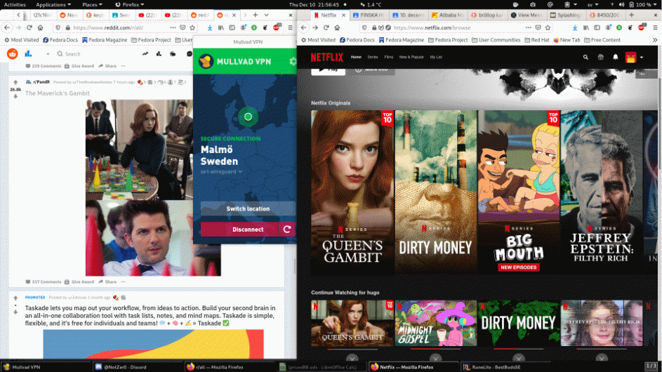
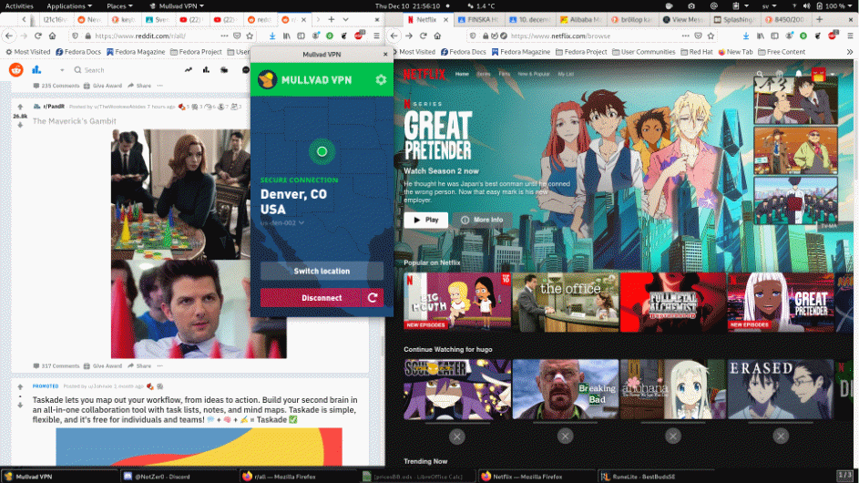

"VPN"
which stands for Virtual Private Network is one of the best tools
available for the average Joe.
But what is a VPN, and what does
it actually do?
Well, to get to that point we have to look at
some history first.
Once upon a time VPNs were merely used
for businesses, governments and important clientele.
It was
practically unheard of for normal citizens.
They needed to
protect their worker(s) from revealing their location and preventing
any attacks on their establishment, for example a DDOS (Distributed
Denial Of Service) attack which grinds data speeds to a halt by
overloading the network.
So, why should you utilize a VPN?
Well to list a few reasons:
Masking your IP enables you to surf the internet/play video games without the risk of getting ‘hacked’. As stated earlier, using your personal IP-adress whilst online allows you to become DDOS’d by anyone knowing your IP adress. This can happen in EVERY online video-game.
Makes it much harder for your ISP/third parties to invade your privacy. If you are out of 4G data and are in a foreign location where you do not have any other option that connecting to that shady network connection in the center of Cittagong. by using a VPN they at the very least cannot track the sites that you visit.
Connect to website/services that the government is against you visiting – for example, when traveling to China you need to utilise a VPN in order to use the internet as we know it!
Most importantly and what probably a majority of the user(s) is using it for is to browse Netflix, as there's a surprising amount of region-locked shows.
This
is how my front-page looks whilst using a Swedish IP-adress:

Whilst
this how my EXACT SAME Netflix account looks when I use it from an
American IP-adress!

Allowing me to watch quality anime as Naruto, Bleach, One Piece and even lower tier anime as Soul Eater is a splendid reason for using a VPN. Not to mention The Office!
Now there is multiply different VPN services available and it might be rather hard to find the proper one.
To
summarize the hundreds if not thousands of different VPN-services
that are available for rent the services of –
I would like to claim that ANY VPN that you find within the first
three pages of a google or DUCKDUCKGO search is a perfectly viable
service.
Unfortunaely
BestBuds does not have its own VPN service for us to promote or
advertise in this article, perhaps that will one day come.
For
now at least the author of this article as well as the translator(s)
of the content on the website is utilising Mullvad. 5€ a month for
a high-quality service is impossible to compete with.
For
the readers who came this far in the article I will elaborate on the
nerdy specifics of VPNs;
First of all an ‘IP’ address
stands for ‘Internet Protocol’ where the adress itself is the
unique name (number in this case) which is your identity on the
internet.
This
identity is equal to your social security number on the internet as
it is the trace that you leave behind when you visit websites, log-in
to game’s etcetera that is how the website identifies you.
The
website knows you are an individual browsing from New Zealand by
communicating with the owner/host of the IP adress that you are
connecting through.
It means that when you browse to
Facebook.com facebook is receiving an IP adress from your connection
where of it speaks to a similar database then www.whois.com
which within milliseconds send out the information regarding you.
In
what country, city and an approximate geophraical location of you
even within the specific city they already specified.
This
mean that when you visit a website it looks a little bit like
this:
YOUR PC > your internet service provider > website –
whilst you are attempting to connect to the website it matches your
ip-adress with an continously updated database in order to retrieve
your personal information.
A good example of this is to
try and fetch your information through www.cmyip.info
.
When you utilise a VPN you go: PC > ISP > VPN >
WEBSITE. Which means that the information that the website is able to
retrieve is regarding the ip adress that the vpn is
contributing.
This means that the website/service you are
visiting.
This means that the website doesn’t know where you
are browsing their website from and your ISP doesn’t know what
websites you are visiting.